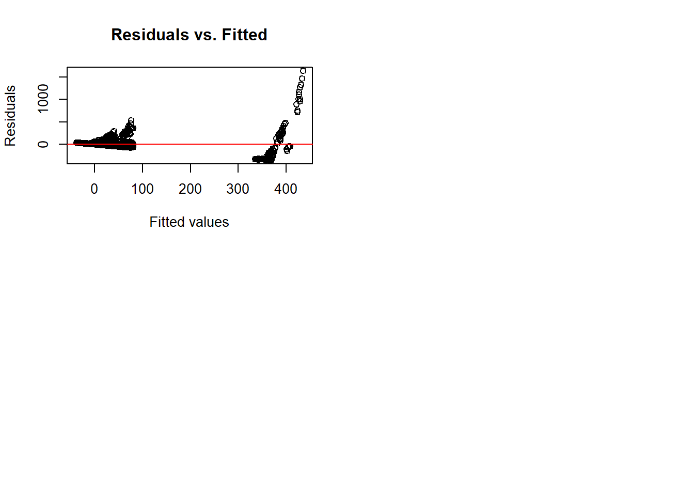

Correlation analysis:After the Visualizations is there any association between different variables such as neighborhood, age, gender, and race.
T-test for HPV prevalence in gender-specific populations.
nyc_HIV1$hiv_diagnoses_num <- as.numeric(nyc_HIV1$hiv_diagnoses_num)
# Extracting data for females and males
female_data <- na.omit(nyc_HIV1[nyc_HIV1$sex == "Female",]$hiv_diagnoses_num)
male_data <- na.omit(nyc_HIV1[nyc_HIV1$sex == "Male",]$hiv_diagnoses_num)
# Perform T-test
t.test(female_data, male_data)##
## Welch Two Sample t-test
##
## data: female_data and male_data
## t = -8.183, df = 1921.9, p-value = 4.982e-16
## alternative hypothesis: true difference in means is not equal to 0
## 95 percent confidence interval:
## -25.78465 -15.81460
## sample estimates:
## mean of x mean of y
## 6.138889 26.938515summary: The t-test passed the test of significance indicating that there was a significant difference in the number of males and females with HIV.
Test whether “hiv_diagnoses_num” is significantly different across ethnicities.
anova1 <- anova(lm(hiv_diagnoses_num ~ race, data = nyc_HIV1))
print(anova1)## Analysis of Variance Table
##
## Response: hiv_diagnoses_num
## Df Sum Sq Mean Sq F value Pr(>F)
## race 5 2587921 517584 59.623 < 2.2e-16 ***
## Residuals 5173 44906405 8681
## ---
## Signif. codes: 0 '***' 0.001 '**' 0.01 '*' 0.05 '.' 0.1 ' ' 1summary: The ANOVA passed the test of significance, indicating that there is indeed a significant difference in the number of people of different races who have HIV.
Test whether “hiv_diagnoses_num” is significantly different between age groups.
anova2 <- anova(lm(hiv_diagnoses_num ~ age, data = nyc_HIV2))
print(anova2)## Analysis of Variance Table
##
## Response: hiv_diagnoses_num
## Df Sum Sq Mean Sq F value Pr(>F)
## age 6 2603171 433862 178.22 < 2.2e-16 ***
## Residuals 10569 25729234 2434
## ---
## Signif. codes: 0 '***' 0.001 '**' 0.01 '*' 0.05 '.' 0.1 ' ' 1summary: The ANOVA passed the test of significance indicating that there is a significant difference in the number of HIV in different age groups.
Test whether there is a significant difference between people of different races and different age groups.
race_table <- table(nyc_HIV1$race, nyc_HIV1$sex)
race_table##
## All Female Male
## All 288 288 288
## Asian/Pacific\nIslander 288 288 288
## Black 288 288 288
## Latino/Hispanic 288 288 288
## Other/Unknown 288 288 288
## White 288 288 288# Perform chi-square test
chisq.test(race_table)##
## Pearson's Chi-squared test
##
## data: race_table
## X-squared = 0, df = 10, p-value = 1summary: The chi-square test passes the test of significance, indicating that there is a significant relationship between race and gender.
# Defining a Unique Thermal Coding Processor
library(caret)## Warning: package 'caret' was built under R version 4.3.2## Loading required package: lattice##
## Attaching package: 'caret'## The following object is masked from 'package:httr':
##
## progress## The following object is masked from 'package:purrr':
##
## liftencoder <- dummyVars(~ borough + sex + race, data = nyc_HIV1)
# Solo thermal coding of data
encoded_data <- predict(encoder, newdata = nyc_HIV1)
# Merging the coded and original data sets
nyc_HIV3 <- cbind(nyc_HIV1, encoded_data)
nyc_HIV4<-nyc_HIV3[,-c(2,3,4,5,7,8,9,10,11,12,18,21)]
model <- lm(hiv_diagnoses_num ~. , data = nyc_HIV4)
summary(model)##
## Call:
## lm(formula = hiv_diagnoses_num ~ ., data = nyc_HIV4)
##
## Residuals:
## Min 1Q Median 3Q Max
## -354.01 -15.87 -3.06 10.01 1637.59
##
## Coefficients:
## Estimate Std. Error t value Pr(>|t|)
## (Intercept) 4514.4981 1597.6302 2.826 0.00474 **
## year -2.0224 0.7912 -2.556 0.01062 *
## boroughBronx -354.5277 7.8099 -45.395 < 2e-16 ***
## boroughBrooklyn -358.4969 7.6619 -46.789 < 2e-16 ***
## boroughManhattan -362.8923 7.6887 -47.198 < 2e-16 ***
## boroughQueens -363.2155 7.6887 -47.240 < 2e-16 ***
## `boroughStaten\\nIsland` -373.2117 8.0652 -46.274 < 2e-16 ***
## sexFemale -26.8822 2.6030 -10.327 < 2e-16 ***
## sexMale -6.1453 2.6045 -2.359 0.01834 *
## `raceAsian/Pacific\\nIslander` -62.6910 3.6817 -17.028 < 2e-16 ***
## raceBlack -36.4375 3.6807 -9.900 < 2e-16 ***
## `raceLatino/Hispanic` -41.7176 3.6807 -11.334 < 2e-16 ***
## `raceOther/Unknown` -65.3393 3.6850 -17.731 < 2e-16 ***
## raceWhite -57.9514 3.6807 -15.745 < 2e-16 ***
## ---
## Signif. codes: 0 '***' 0.001 '**' 0.01 '*' 0.05 '.' 0.1 ' ' 1
##
## Residual standard error: 76.5 on 5165 degrees of freedom
## (5 observations deleted due to missingness)
## Multiple R-squared: 0.3635, Adjusted R-squared: 0.3619
## F-statistic: 226.9 on 13 and 5165 DF, p-value: < 2.2e-16The coefficients of all variables passed the significance test, indicating that all of these independent variables have a significant effect on hiv_diagnoses_num. The coefficient before the variable “boroughStaten\” has the largest absolute value, which means that it has the largest effect on the number of HIV patients. In addition, the coefficients before these variables are all negative, indicating that they all negatively affect hiv_diagnoses_num.Finally, the multiple linear regression model constructed ishiv_diagnoses_num=4514.4981-2.0224year-354.5227boroughBronx-358.4969boroughBrooklyn-362.8923boroughManhattan-363.2155boroughQueens-373.2117boroughStaten\nIsland-26.8822sexFemale-6.1453sexMale-62.6910raceAsian /Pacific\nIslander-36.4375raceBlack-41.7176raceLatino/Hispanic-65.3393raceOther/Unknown-57.9514*raceWhite.
#Drawing demonstration
par(mfrow=c(2, 2))
plot(model)# Plot of predicted values against residuals
residuals <- resid(model)
fitted_values <- predict(model)
plot(fitted_values, residuals,
xlab = "Fitted values",
ylab = "Residuals",
main = "Residuals vs. Fitted")
abline(h = 0, col = "red")
summary:Here is a test of the effectiveness of the regression model constructed above. Use plot(model) to draw residual plots, scatter plots and other diagnostic plots. Residual plots are used to check for linear properties, heteroskedasticity, outliers, etc. Scatter plots can be used to check for correlation between independent variables, and QQ plots are used to check whether the residuals conform to the assumption of normal distribution. Here, we can see that the residuals do not conform well to normality and randomness. Analyzing the reason, it may be due to the existence of individual outliers, which affects the distribution of the data and the distribution of the residuals, making them not conform to normality and randomness.